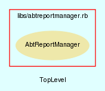

|  |
AbtReportManager.rb
AbtReportManager class handles all sort of report and query generation within the AbTLinux system.
Created by Eric D. Schabell <erics@abtlinux.org> Copyright 2006, GPL.
This file is part of AbTLinux.
AbTLinux is free software; you can redistribute it and/or modify it under the terms of the GNU General Public License as published by the Free Software Foundation; either version 2 of the License, or (at your option) any later version.
AbTLinux is distributed in the hope that it will be useful, but WITHOUT ANY WARRANTY; without even the implied warranty of MERCHANTABILITY or FITNESS FOR A PARTICULAR PURPOSE. See the GNU General Public License for more details.
You should have received a copy of the GNU General Public License along with AbTLinux; if not, write to the Free Software Foundation, Inc., 51 Franklin St, Fifth Floor, Boston, MA 02110-1301 USA
- generateHTMLPackageListing
- new
- searchPackageDescriptions
- showFileOwner
- showFrozenPackages
- showInstalledPackages
- showJournal
- showPackageDependencies
- showPackageDetails
- showPackageLog
- showQueue
- showUntrackedFiles
- showUpdates
Constructor for the AbtReportManager.
RETURN AbtReportManager - an initialized Report1Manager object.
[ show source ]
# File AbtReportManager.rb, line 41
41: def initialize
42: end
Generates an HTML page of installed packages from installed packages list.
RETURN void.
[ show source ]
# File AbtReportManager.rb, line 242
242: def generateHTMLPackageListing
243: end
Searches the installed package trees package descriptions for matching occurrances of the given search text.
PARAM String - a search text.
RETURN hash - a hash of the search results, keys are package names and values are matching descriptions.
[ show source ]
# File AbtReportManager.rb, line 190
190: def searchPackageDescriptions( searchText )
191: end
Display the name of the package(s) that own the given file.
PARAM String - a file name.
RETURN void.
[ show source ]
# File AbtReportManager.rb, line 178
178: def showFileOwner( file )
179: end
Display a list of the packages found in the frozen list.
RETURN void.
[ show source ]
# File AbtReportManager.rb, line 121
121: def showFrozenPackages
122: end
Display all packages installed and tracked by AbTLinux.
RETURN void.
[ show source ]
# File AbtReportManager.rb, line 97
97: def showInstalledPackages
98: end
Display the AbTLinux journal file.
PARAM string The complete path of the file to display.
RETURN iboolean True if journal shown, otherwise false.
[ show source ]
# File AbtReportManager.rb, line 154
154: def showJournal( fileName )
155: if ( File.exist?( fileName ) )
156: puts "\n\n"
157: puts "AbTLinux log:"
158: puts "============="
159: log = IO.readlines( fileName )
160: log.each{ |entry| puts entry }
161: puts "\n\n"
162: else
163: puts "\n\n"
164: puts "AbtLinux log ( #{File.basename( fileName )} ) is empty at this time."
165: puts "\n\n"
166: end
167:
168: return true
169: end
Provides access to dependency checking via the AbTLinux DepEngine. (This portal to the DepEngine will be expanded in apart sub-project, more details at a later date.)
PARAM String - Package name.
RETURN hash - Empty hash if no problems found, otherwise hash of problem files and their encountered errors.
[ show source ]
# File AbtReportManager.rb, line 134
134: def showPackageDependencies( package )
135: end
Display all data for a given package.
PARAM String - Package name.
RETURN boolean - True if completes without error, otherwise false.
[ show source ]
# File AbtReportManager.rb, line 52
52: def showPackageDetails( package )
53: require package
54:
55: if ( package = eval( "#{package.capitalize}.new" ) )
56: details = package.details
57:
58: puts "|====================================="
59: puts "| Package name\t: #{details['Package name']}"
60: details.delete( "Package name" )
61: puts "| Version\t: #{details['Version']}"
62: details.delete( "Version" )
63: puts "| Homepage\t: #{details['Homepage']}"
64: details.delete( "Homepage" )
65: puts "| Executable\t: #{details['Executable']}"
66: details.delete( "Executable" )
67: puts "| Source uri\t: #{details['Source uri']}"
68: details.delete( "Source uri" )
69: puts "| Description\t: #{details['Description']}"
70: details.delete( "Description" )
71: puts "|====================================="
72: puts "|====================================="
73:
74: details.each do |name, value|
75: print "| #{name}\t"
76:
77: if ( name.length < 14 )
78: print "\t"
79: end
80:
81: puts ": #{value}"
82: end
83:
84: puts "|====================================="
85: return true
86: end
87:
88: logger.logToJournal( "[AbtReportManger::showPackageDetails] - failed to show details for ${package}." )
89: return false
90: end
Display the contents of the requested log for a given package. Possible log types are; install, build and integrity.
PARAM String - Package name.
PARAM String - log type.
RETURN void.
[ show source ]
# File AbtReportManager.rb, line 110
110: def showPackageLog( package, logType )
111: # install log
112: # build log
113: # integrity log
114: end
Displays the contents of the current queue based on the given queue.
PARAM String - the type of queue to display such as install queue.
RETURN void.
[ show source ]
# File AbtReportManager.rb, line 201
201: def showQueue( queueType )
202: queueFile = "#{$ABT_LOGS}/#{queueType}.log"
203: case queueType
204:
205: when "install"
206: if ( File.exist?( queueFile ) )
207: puts "\n\n"
208: puts "AbTLinux #{queueType} queue:"
209: puts "======================="
210: queue = IO.readlines( queueFile )
211: queue.each{ |entry| puts entry }
212: puts "\n\n"
213: else
214: puts "\n\n"
215: puts "AbtLinux #{queueType} is empty at this time."
216: puts "\n\n"
217: end
218:
219: else
220: puts "#{queueType.capitalize} is not an AbTLinux queue."
221: end
222: end
Display all files not part of any installed AbTLinux package. This delivers a list of files that are not tracked by AbTLinux package management.
RETURN void.
[ show source ]
# File AbtReportManager.rb, line 144
144: def showUntrackedFiles
145: end
Reports available updates for a given package or package tree based on the current system.
PARAM String - the target of the update check, either a package name or a package tree name.
RETURN boolean - True if completes without error, otherwise false.
[ show source ]
# File AbtReportManager.rb, line 234
234: def showUpdates( target )
235: end